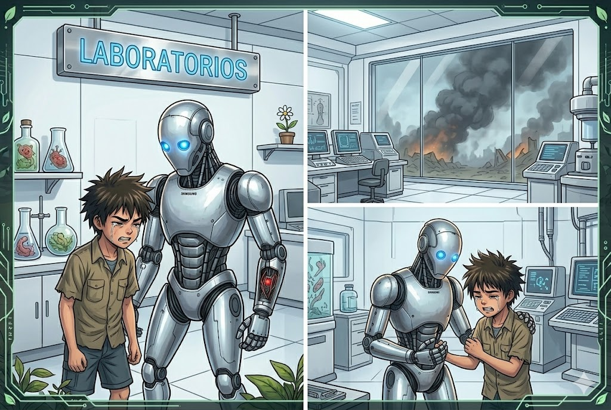

Debido al ataque al asentamiento siendo este el ultimo punto de resistencia de la humanidad un edificio que habia sido completamente portegido estaba desolado BIO y 0-125 entraron en el y subieron hasta el final de los pisos con esto y las emociones chocantes de ambos dieron los condujo hacia una sala llamada laboratorios sin embargo la rabia y el dolor los cegaron de poder comprender a donde habian llegado.